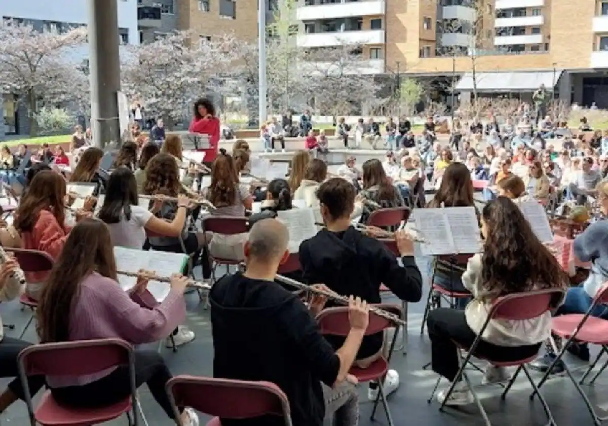
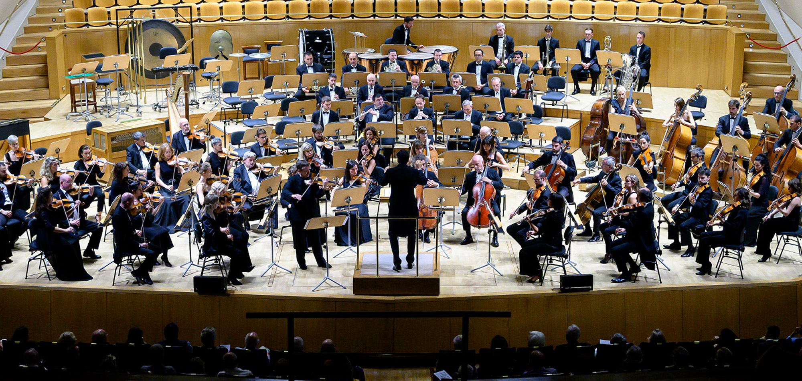

La flauta travesera se acercó a Erribera.
La Escuela de Música Norberto Almandoz se encuentra a pleno rendimiento y son muchas las actuaciones y audiciones que durante estos días están llevando a cabo en la casa de cultura de Erribera.
Algunas lo hacen en el interior del edificio, pero otras apuestan por sacar la música a la calle para disfrute de todo el que pase.
Sigue leyendo el artículo completo aquí.
¿Te preocupa que a tu hijo se le caiga la flauta?
Por Diego García
"Como padre, una de las grandes preocupaciones que tengo es que alguno de mis hijos rompa algo que acabamos de comprar, y si hablamos de una Flauta ocurre lo mismo..."
Enlace del artículo completo aquí

Convocatoria 16 plazas fijas de Profesor Tutti ONE 2023
Especialidades flauta y flautín. Información relevante para las personas interesadas en inscribirse en estas audiciones:
Enlace aquí.